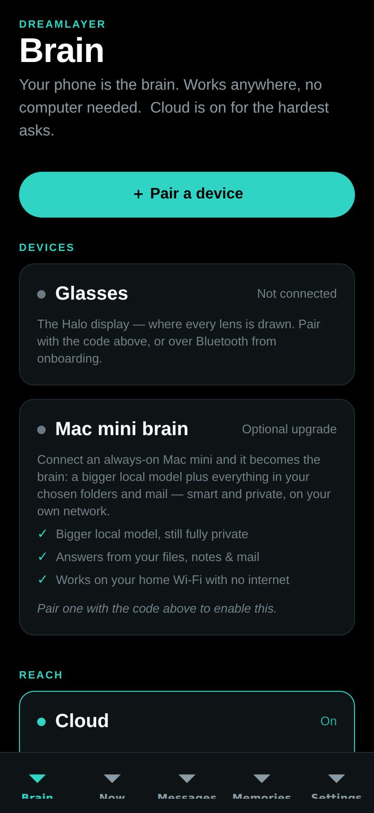
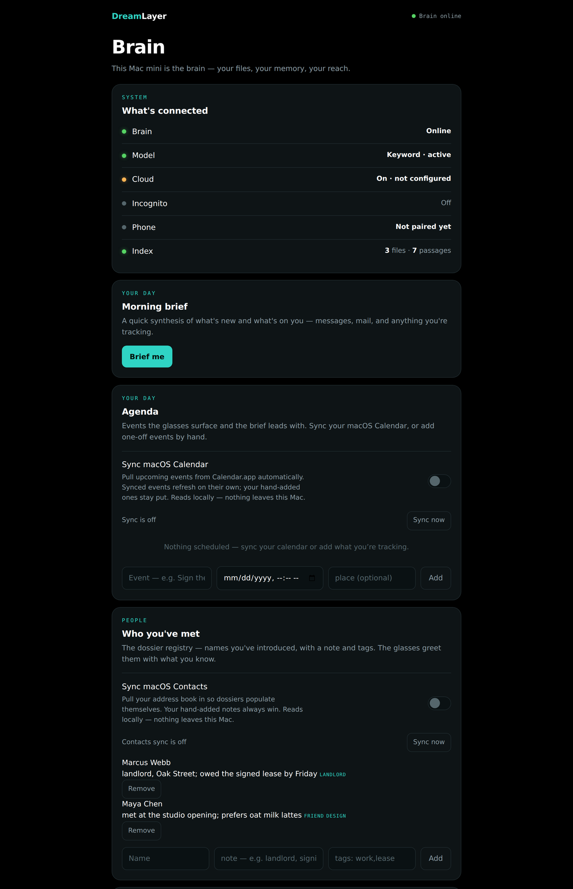

A memory layer for the real world.
Your glasses see what you see. DreamLayer remembers it, understands it, and hands it back the instant you need it — privately, on your own hardware.
No feeds, no pings, no screens to check. A card of light and glass surfaces on the rim of your sight the moment it's useful — then files itself away. Nothing pops; everything arrives.
You look at the snake plant. A soft card: water every two weeks, last done Tuesday. A wine label — its region, and what you paid last time. Look → know, no phone out.
Someone says “Hi, I’m Maya.” DreamLayer keeps it automatically and starts a quiet dossier. Next time you meet, it greets you with her name, when you last spoke, and what about — you never blank again. Only people who introduce themselves are ever kept; no stranger lookup, ever.
Your ambient second memory has been quietly keeping what matters — objects, places, promises. Say “Hey Oracle,” or just ask out loud. The answer often lands before you finish the question.
You promised Marcus the lease by Friday. As Friday nears, the promise drifts toward the edge of sight and starts to glow. You don’t forget. You never even had to write it down.
A menu you can’t read reads back in your own words, live, on your own hardware. Rosetta is the eye; Puente is the ear and voice.
A live re-creation of how the display moves — drawn in your browser with the same palette and the same signature motion the glasses run: closed-form springs, flowing rim light, an answer that condenses in and files itself away.
every card above is real — the Meridian Solid pass, drawn by the shipping renderer, 256 px, one eye
The everyday loop — a glance, a nod, and it’s kept. Ask when you need it back, or just return: it resurfaces on its own the moment you’re near.
Watch a full loop →
Everything DreamLayer does groups into six lenses. Underneath them all: the Privacy Veil, and Atmosphere — the ambient light and feel.
tap a lens to open it
The phone names an object instantly and offline; a Mac mini on your LAN explains it richly from your knowledge; the cloud is only ever reached for the rare, hard, non-personal question — and only if you turned it on.
The display & sensors. A round HUD on the rim of your sight — the eyes of the layer.
Orchestrator, memory, and the privacy gate. The brain by default — instant, offline, yours.
A bigger local model plus your indexed files and mail. Never leaves the house.
Frontier reach for the hardest, non-personal asks. A switch you own — not a default you accept.
Phone + Brain + glasses, scanned or pasted once. Nothing marked private ever leaves, in any configuration. Three ways in ↓
dreamlayer: code — the trio is paired before
the coffee cools.Both testable now, before the glasses ship. The iOS app pairs your devices and puts your brain in your pocket; the Mac app turns a spare Mac mini into a private knowledge node on your own network.

Pair the trio with one code and own your privacy from a single screen — phone-first, cloud a switch you hold.

Point it at a spare Mac and it becomes the smart, private half of your brain — indexing your world and serving it back, all on your own network.
Not a mute icon — an architecture. Nothing seen, heard, or kept until you lift it. And underneath: no stranger identification, no voice cloning, no covert recording. Deliberately not built.
DreamLayer ships first on the Brilliant Labs Halo — currently the only glasses capable of running it. More devices as they catch up. Be there when the layer wakes.